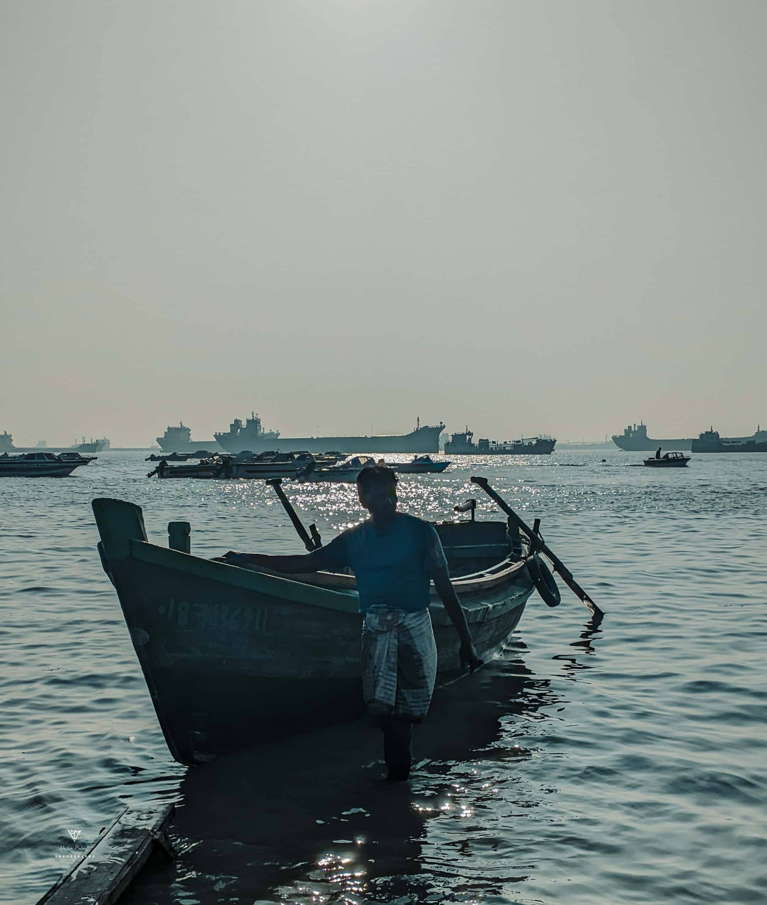

"The most extraordinary photographs happen within walking distance of where you live."
I'm a self-taught photographer from Rajbari, Dhaka, Bangladesh. My obsession is scale — getting close enough to an ant to fill the entire frame, finding the geometry inside a wildflower petal, watching golden light paint a harbor at dusk.
You don't need to travel the world. You need to truly see your own backyard. Mine happens to be one of the most beautiful places I've ever looked at — and I've looked very, very closely.


Started with a smartphone and pure curiosity. The first frames: sunflowers reaching toward the sky, insects frozen mid-step on leaves. Something clicked — not just the shutter.
I was feeling something in my hearth. About the unseen beauty of the nature. It gives me the peace. I am loving this very soon.
At that Point, I feel that It becomes my favourite Hobby. I am enjoying with it. I am playing with it. That feelings was really undesirable.
Graduated to macro lenses. Discovered the universe living on a single chili plant — ants farming aphids, dew beads refracting light. Every centimeter became a landscape.
The harbor at dusk became a second home. Silhouettes of workers, the golden haze over the water, the rhythm of boats. Photography of people became as important as photography of nature.
Building a body of work that proves the extraordinary lives right here in Rajbari. Every walk is a shoot. Every garden is a studio. The lens never stops looking.